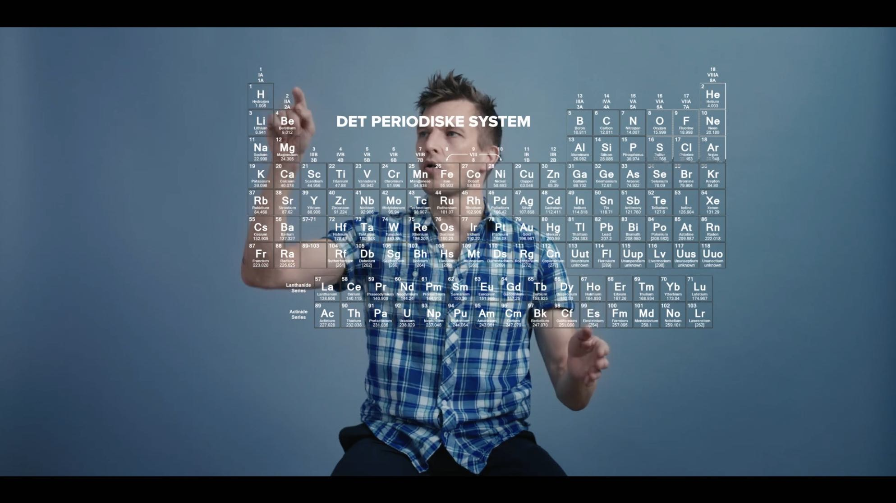

Part of my job is disseminating the science we do here at the Cosmic Dawn Center. Get in touch if you want to hear about astronomy — I happily give talks and interviews, as well as take part in more untraditional events.
- What are scientific models, and can we trust them? (w. Tino Tønnesen/IDA Space Talks)
- On the structure of the Universe on all scales, from elementary particles to the multiverse (w. Tino Tønnesen/IDA Space Talks)
- Can you travel faster than light? (w. Tino Tønnesen/IDA Space Talks)
- How fast does the Universe expand? (w. Tino Tønnesen/IDA Space Talks)
- Space geometry, Euclid, and a squashed donut (w. Tino Tønnesen/IDA Space Talks)
- Black holes — a dark tale of gravity and more… (w. Tino Tønnesen/IDA Space Talks)
- The Big Bang; what happened, and was it really the beginning of time? (w. Tino Tønnesen/IDA Space Talks)
- The formation, evolution, diversity, and history of galaxies (w. Tino Tønnesen/IDA Space Talks)
- Magical images from space (w. Johan Olsen & Vicky Knudsen/P1)
- The hunt for the beginning of the Universe (about James Webb's first galaxies) (w. Kaare Svejstrup/Pilestræde @ Berlingske)
- On galaxies and the astronomy study (w. T-Radioen / Aflønnede Hjerner)
- The Big Bang (w. Tina Ipsen & Anders Høeg Nissen/RumSnak)
- Is the Earth flat? Testing with FE'er Ole Lochmann (w. Per Lysholt/Radio 24syv)
- Dark energy (w. Peter Lund Madsen/Hjernekassen på P1)
- Popular misunderstandings about the Big Bang (w. Maj Bach Madsen/Radio 24syv)
- The creation of the Universe (w. Hannah Heilmann/Ingen Frygt)
-
Look up in December: See the stars' temperature with your own eyes
What can you see on the stellar sky in December? -
Look up in july: A new star flares up in the sky — see it with your own eyes
What can you see on the stellar sky in July? -
Can we see galaxies move away from us faster than the speed of light?
My favorite fact about the Universe: In contrast to what many think, galaxies can not only recede faster than the speed of light, but we can also see them! -
How fast does the Universe expand?
Cosmological crisis: The Universe is expanding, but astronomers disagree on how fast. -
With James Webb back to the edge of time itself.
James Webb, its science, and its first results. -
How far is it to the most distant galaxy?
Contributed chapter to the Niels Bohr Institute's 100 years' anniversary book Lyset fra Bohr ("The light from Bohr"). -
Spiral galaxies
How do spiral galaxies get their beautiful arms? -
Galaxies
About the Niels Bohr Institute's research in galaxies, aimed at prospective students (in Danish). -
Black holes reflect the Universe
An explanation of my colleague's calculations of the spacetime warping near the surface of a black hole (in Danish). -
Understanding galaxy evolution
A slightly-more-complex-than-usual story about how astronomers learn about galaxies and their evolution (an English press release about this can be found here). -
How are galaxies formed?
Step-by-step galaxy formation. -
What is a galaxy?
…what are they made of, and which kinds are there? - The Big Bang — an eyewitness account.
What would you experience if you were present during the first 15 minutes after the creation of the Universe?- Originally in Danish, but translated to English and Norwegian.
- Awarded best Danish public outreach on Forskerzonen.
- The Beginning of the Universe (second author).
In addition to the published articles above I've created a small
encyclopedia for non-astronomers
with short introductions for laymen to some of the stuff that I spend my time on.
I also tweet regularly about astronomy: Follow @anisotropela
I regularly write small articles in laymen's terms about our research at the Cosmic Dawn Center.
Some of these are picked up and reported by other media, of which I list the major ones (Danish sites, and foreign media with ≥ several million viewers/month) below.
Press releases
- New insights into galaxy growth and dark matter from James Webb
- Webb provides a new detailed look into the formation of the first galaxies
-
James Webb discovers record-distant galaxy, again
- Picked up by e.g. videnskab.dk.
-
First results from ESA’s space telescope Euclid
- Picked up by e.g. videnskab.dk.
- Webb observes the glowing embers of colliding neutron stars
-
Colliding neutron stars provide a new way to measure the expansion of the Universe
- Picked up by e.g. phys.org, Science Daily, and Astronomy & Astrophysics news.
-
Astronomers discover newborn galaxies with the James Webb Space Telescope
- Picked up by e.g. videnskab.dk, New Scientist, Universe Today, and ScienMag.
-
James Webb’s “too massive” galaxies may be even more massive
- Picked up by e.g. phys.org, SciTechDaily, and Universe Today.
-
Nearby galaxies help astronomers understand distant galaxies
- Picked up by e.g. phys.org and The Indian Express.
-
The brightest explosion ever seen
- Picked up by e.g. videnskab.dk and Weekendavisen.
-
Radio- and microwaves reveal the true nature of dark galaxies in the early Universe
- Picked up by e.g. Radio4, Phys.org, Universe Today, and YouTube/logabalakarthikeyan.
-
Black holes helped quenching star formation in the early Universe.
- Picked up by e.g. ScienMag.
-
Hubble spots most distant single star ever seen, at a record distance of 28 billion lightyears
- Picked up by e.g. CNN, The Sun, New York Post, ABC 7, Astronomy, Phys.org, Smithsonian Magazine, Live Science, DR, videnskab.dk, Kristeligt Dagblad, and Jyllands-Posten.
-
Student discovers link between global warming and the local unstability of weather
- Picked up by e.g. videnskab.dk, TV2, Berlingske, B.T., Jyllands-Posten, Phys.org, ScienceDaily, Environmental News Network, ScienMag, and forskning.no.
- Super telescope will peer nearly 14 billion years back in time (co-written with the UCPH Science news team)
-
Hubble finds distant galaxies that ran out of fuel
- Picked up by e.g. ScienceReport, videnskab.dk, and Jyllands-Posten.
-
Astronomers see the same supernova three times — and predict a fourth to appear in 16 years
- Picked up nationally and internationally by e.g. videnskab.dk, P1 Morgen, Politiken, DR Viden, Aktuel Naturvidenskab, Ekstra Bladet, A&G (Royal Astronomical Society), Xataka, and Daily Galaxy.
-
Danish Student solves how the Universe is reflected near black holes
- Picked up nationally and internationally by e.g. videnskab.dk, Ingeniøren, Science Alert, Space & Planetary News, ScienMag, Space Daily, and Futurity
- Most read research news article on UCPH's website 2021 (link)
- Danish participation in over a third of the new James Webb Space Telescope’s initial observations
Other news stories
- Largest James Webb program yet approved: led by researchers at the Cosmic Dawn Center
- Three missions left in ESA’s race for the next medium-class space mission
- A galaxy group in the early Universe
- Picked up by e.g. space.com, phys.org and the Italian National Institute for Astrophysics.
- Astrophysicists unveil the unexpected symmetry of cosmic explosions
- Picked up by e.g. videnskab.dk.
- Early galaxy formation caught in the act with James Webb
- Record distant galaxy confirmed with James Webb
- A kilonova associated with a long gamma-ray burst
- Farthest galaxy candidate yet known discovered by James Webb
- Picked up by e.g. Phys.org
- Master student discovers a group of galaxies clustered together in the early Universe (co-written with Georgios Magdis)
- Astronomers discover a swarm of galaxies orbiting a hyper-luminous galaxy
- Picked up by e.g. Phys.org, Space.com, Universe Today, and Wikipedia (!).
-
Galaxies at Cosmic Dawn
- A 15 minutes' read on James Webb's observations of galaxies so distant and so big that they seem to defy physics.
- Also available in a 2 minutes' overview: James Webb challenges cosmic dawn.
- Picked up by e.g. videnskab.dk, P1, and Radio4.
- First images from the James Webb Space Telescope — press conference at DAWN
- New analysis leads to a fundamentally different view of supermassive black holes (co-written with John Weaver)
- A novel way of investigating star-forming gas in the early Universe
- Reported record-distant explosion turns out to be probably just a piece of space junk
- ALMA Discovers Rotating Infant Galaxy with Help of Natural Cosmic Telescope
- Highest detail yet observations of distant galaxy
- Understanding galaxy evolution
- ALMA captures distant colliding galaxy dying out as it loses the ability to form stars
News on colleagues' grants, awards, and research
- Charlotte Mason receives large ERC grant to study structure formation in the early Universe
- Giants of the Universe: Francesco Valentino receives grant to join the Cosmic Dawn Center
- Charlotte Mason receives the L'Oréal-UNESCO's For Women in Science Award
- Bitten Gullberg awarded the Villum Young Investigator grant
- Charlotte Mason awarded large grant from the Carlsberg Foundation
- Shuowen Jin receives the 2022 IOP China Top Cited Paper Award
- Darach Watson receives the ERC Synergy Grant
- Kasper Heintz receives €207,000 from the Villum Foundation for building a new binocular telescope
- Francesco Valentino appointed the “Best young Italian Researcher in Denmark”
- Francesca Rizzo is awarded the Otto Hahn Medal
- Lise Christensen receives grant from the Independent Research Fund Denmark
- Seiji Fujimoto awarded the prestigious NASA Hubble Fellowship
- Karina Caputi receives a large grant from the Dutch Research Council
- Claudia Lagos awarded the International Union of Pure and Applied Physics Young Astronomer prize
- Kasper Heintz receives Carlsberg Reintegration Fellowship
- DAWNers among the world's highest cited scientists
- Shuowen Jin receives the 2021 IOP China Top Cited Paper Award
- Francesca Rizzo is awarded the Kippenhahn Prize
- Kasper Heintz is awarded 180 hours at the Very Large Telescope to study fast radio bursts
- Johan Fynbo receives DFF grant for finding quasars in a new way
On energies in quantum leaps

James Webb's long journey into space

How do we know that the expansion of the Universe is accelerating?

Five things you should know about the James Webb Space Telescope:

Lost rum ball love:
Five things you should know about about galaxies:

Everything is made of particles:

More videos:
- Co-quizmastering The Science Club science quiz for high-school students (Charlotte Price & Gustav Hylsberg Jacobsen/Videnskabsklubben)
- Q&A about cosmology
- How to build a galaxy / Culture Night 2023 (Ola Joensen/NBI)
- The Danish Science Festival / Book A Scientist (Stine Sylvestersen/TV2 Kosmopol)
- My video "5 things you must know about galaxies" on TV (TV2/Lorry)
- Brorfelde Observatory; a documentary (Søren K. Lynggard/Cph. Astronomical Society)
- How was the Sun formed? Explanation for 3–13 year olds (Barbara Nielsen & Sofus Laursen/HULiGENNEM)
- How can you travel in time? Explanation for 3–13 year olds (Barbara Nielsen & Sofus Laursen/HULiGENNEM)
- The power consumption of 40,000 concert guests waving their cell phone flashlights. (Julie Rahbek og Chano Jørgensen/Basker; ved 16:40)
- Exoplanet Gliese 12b (Mette Vibe Utzon/Radio4)
- Space boiled down — how to commmunicate astronomy (Thorkild Jacobsen/P2)
- The Euclid space telescope has been launched, and is on its way to join James Webb (Nicolai Dupont/Radio4; at 00:33:45)
- How does a mirror know what's behind the paper? (Martin Plauborg/P3; at 59:30)
- Are we living in a simulation? (Christian Fuhlendorff, Masoud Vahedi & Christian Frederiksen/Op af Kaninhullet; at 49:25)
- Winter solstice topic on darkness (Tony Scott & Amalie Bremer/Radio4; at 01:20:00)
- Record distant galaxy confirmed with James Webb (Nicolai Dupont/Radio4; at 00:19:35)
- Distance record-breaking galaxies with James Webb? (Nicolai Dupont/Radio4; at 01:15:03)
- James Webb's first images (Nicolai Dupont/Radio4; at 01:00:53)
- How do you discover galaxies? And how do you follow their evolution over millions of years?(Nicolai Dupont/Radio4; at 00:06:10)
- James Webb's instruments are finally ready, and the first scientific observations have been secuared (Nicolai Dupont/Radio4; at 01:01:55)
- James Webb has reached its target temperature, and all its mirrors are in place (Nicolai Dupont/Radio4; at 01:00:30)
- The "missing link" between galaxies and quasars (Thomas Schumann/Den Nye Rumalder; at 38:45)
- Astronomers found a bunch of "rogue" planets without stars (Camilla Boraghi & Mads Bjerregaard/Den Uafhængige; at 1:01:10)
- James Webb had its first light (Nicolai Dupont/Radio4)
- James Webb is home! (Kasper Harboe/Radio4)
- More on James Webb (Kasper Harboe/Radio4)
- What can go wrong for James Webb? (Astrid Date/Radio4)
- Discussion with an astral traveler (Anton Ringdal & Kristoffer Kristensen/Radio LOUD)
- Which question would I like answered the most (Tina Ipsen & Anders Høeg Nissen/RumSnak; at 4:12)
- A new spiral arm in the Milky Way? (Dagmar Eben Østergaard & Astrid Date/Radio 4; at 3:40)
- Astronomers predict supernova explosion in 2037 (Maria Dohn & Anders Bech-Jessen/P1 Morgen; at 1:16:37)
- Time (travel) & entropy in Nolan's TENET (Simon Schmidt & Svenne Lund Jensen/Radio 4)
- Autumn's night sky in Norway (Kari Slaatsveen/NRK P1)
- Exoplanet β Pictoris c (Kristoffer Lind/Radio 24syv)
- Stars vs. grains of sand (Elise Farestveit/NRK P1)
- Is the Universe returning to the Big Bang? New measurement open up the the possibility (Tania Andersen/Ingeniøren)
- New results about dark energy can change our understanding of the Universe (Ida Meesenburg/DR)
- Seven planets at the same time. How to spot the rare phenomenon on the night sky (Simon Clemmensen/Illustreret Videnskab)
- Earth's defense against asteroids has become stronger (Emilie Hvid Rasmussen/Kristeligt Dagblad)
- Planets on parade: Right now you can see 6/7 of them (Jacob Mouritzen/TV2)
- Once in a lifetime planet parade: astronomically unimportant but aesthetically pleasing (Carsten Bessing/Ingeniøren)
- This year's Christmas calendar is about time travel. But is it really possible? (Cecilie Fogtmann/Kristelig Dagblad)
- The Geminids are upon us (Tanya Maria Møller Knudsen/videnskab.dk)
- Shouldn't galaxy collision be impossible? (Mikkel Meister/Illustreret Videnskab)
- Morning dew in a cosmic web: New 3D map of the Universe provides hints about dark energy (Henrik Bendix/videnskab.dk)
- Interview about the Perseids (Ritzau)
- Picked up by e.g. Berlingske, TV2, TV2 Øst, Ekstra Bladet, B.T., Se & Hør (!), and SeniorNews (!).
- Are we being watched by aliens? (probably not) (Tanya Maria Møller Knudsen/videnskab.dk)
- Danish researchers look 13 billion years back in time and make a "fantastic" discovery (Lise Brix/videnskab.dk)
- Interview on the Lyrids (Ritzau)
- Picked up by e.g. DR, B.T., MSN, Ugeavisen, og Aarhus Stiftstidende,
- Spiral phenomenon over East Greenland (Thomas Munk Veirum/Sermitsiaq)
- 2023 in astronomy (Mette Vosgerau/videnskab.dk)
- 30 shooting stars per hour: Meteor swarm brightens the night sky (Lauge Germunddsson/TV2 Øst)
- Reported by e.g. Ekstra Bladet
- Peter studies the early galaxies – now you can have him home for a talk in your living room (Marie Kjempff/TV2 Kosmopol)
- Invite a researcher for a free talk at home (Peter Rasmussen/Ritzau)
- Reported by e.g. Berlingske, B.T., Kristeligt Dagblad, MSN, Ugeavisen, Stiften, and Jyllands-Posten
- Increasing light pollution makes star-gazing difficult (Johan Gudmandsen/videnskab.dk)
- James Webb announced the breakthrough of the year (Christian Lindberg/videnskab.dk)
- Cosmic mystery: Galaxies from the early Universe appear much bigger than ought to be (Johan Gudmandsen/videnskab.dk)
- Are there more universes than this? (Mette Mølgaard/videnskab.dk)
- What does James Webb's first five images show? (Frederik Sonne/videnskab.dk)
- Will black holes swallow the whole Universe? (Simon Taarnskov Aabech/videnskab.dk)
- Article translated to Norwegian on forskning.no
- What will the James Webb Space Telescope look for in the Universe? (Simon Taarnskov Aabech/videnskab.dk)
- James Webb's observational schedule is out now (Henrik Bendix/Ingeniøren)
- Hubble detects most distant single star yet, 28 billion lightyears away (Sally Cole Johnson/Laser Focus World)
- Researchers found at least 70 new rogue planets (Mette Mølgaard/videnskab.dk)
- Mankind's new eyes in space (Søren Flott/Dagbladenes Bureau)
- A Golden Guiding Star (Gunver Lystbæk Vestergård/Weekendavisen)
- This is how Life, Earth, the Sun, and the Universe end (Mikkel Vuorela/Information)
- Danish participation in the Jamew Webb Space Telescope (Frederik Thymark/videnskab.dk)
- A new spiral arm in the Milky Way? (Rasmus Fredsted/videnskab.dk)
- Article translated to Norwegian on forskning.no
- What keeps the Solar System in place in the Milky Way? (Christian Lindberg/videnskab.dk)
- Also published in different versions in various newspapers, e.g. B.T., Kristeligt Dagblad, JydskeVestkysten, Sjællandske Nyheder og Brædstrup Avis.
- The Nobel Prize in Physics 2020 (Anne Reil-Gammelgaard/Dagbladet Information)
- The Nobel Prize in Physics 2020 (Niklas Asp Nielsen/videnskab.dk)
- Nolan's "TENET": Time & entropy (Frederik Sonne/videnskab.dk)
- Article translated to Norwegian on forskning.no
- Stars vs. grains of sand (Frederik Sonne/videnskab.dk)
- Article translated to Norwegian on forskning.no
- Article quoted in Ude & Hjemme
- Flat Earth (Martin Huseby Jensen/ABC Nyheter)
- The very first moment (Marianne Nordahl/forskning.no)
- Milky Way collision (Charlotte Price Persson/videnskab.dk)
- Galactic winds (Henrik Bendix/videnskab.dk)
- Article translated to Norwegian on forskning.no
- Aurora (Johanne Trærup/Ekstra Bladet)
- Weightlessness (Berit Viuf/Politiken)
- Where in the Universe did Big Bang happen (Sybille Hildebrandt/videnskab.dk)
{kind=link}
- The most luminous quasar ever discovered (Søren Juhler/TV2)
- James Webb's first images (Mette Blomsterberg/DR Aftenshowet)
- James Webb's first images to be released (Lennart Sten/TV2 NEWS)
- Niels Bohr Institute centennial (Niels Christian Buhl/TV2 Lorry; at 12:00)
- James Webb Space Telescope launch (Clara Rørsig/DR TV Avis; at 3:10)
- James Webb Space Telescope launch (TV2 Nyheder)
- James Webb Space Telescope launch; commenting on the process (Anders Havndrup/TV2 NEWS)
- Guesting a satire TV show, talking about entropically dissolving the government (Jonatan Spang/Tæt På Sandheden)
I regularly give talks on various astronomy-related topics to high school students, amateur astronomy associations, companies, and the general public. Even in prisons!
Some topics of the talks I give are:
- James Webb — the new space telescope
- Galaxies — the building blocks of the Universe
- Cosmology — then and now
- Lyman α — a window to the distant Universe
- The dark Universe (on dark matter, dark energy, and black holes)
- Stars — birth, life, and death
- Spectroscopy and astronomy
- My research
- Science communication
I'm the editor of the Niels Bohr Institute's Q&A column Ask about Physics.
I also answer questions about physics and astronomy in my own Q&A column and at StackExchange (physics / astronomy).
Do you have a question? Use one of the links above, or ask it in the yellow box below/on the right.
Various events
- Game master / speaker at an atom-themed party deep in a Swedish forest.
- Panel debate about James Webb with science editor Lasse Foghsgaard at Politiken Festival.
- Organized a live-streaming of the James Webb Space Telescope in the Planetarium, for the public and the press (postponed a year due to corona, instead being about the latest results from James Webb).
- Inauguration of the Planetarium's new dome together with e.g. Anja C. Andersen, Holger Bech Nielsen and Pernille Rosendahl. Hosts: Peter Falktoft and Esben Bjerre.
- Co-quizmastering a science quiz for high-school students.
- Science Slam at the Planetarium. Emcee'd by Per Vers.
- Panel debate about science and religion with physicist Troels C. Petersen and religion-historian Mikael Rothstein and 200 pupils from Rysensteen High School.
Consultancy
- Constructed a spacetime diagram for the popular science book Particle and Cosmos: How does the Universe Work? by Xavi Bartrolí.
- Scientific consultant on the historical thriller Days of dust about Tycho Brahe's killer.
- Conversation about black holes, as inspiration for filmmaker Henrike Meyer's movie To be an extra.
- Guiding illustrator Klavs Moltzen designing an interactive stellar sky, found in the Baneby Park.
- Fact-checker / scientific consultant on Himlen set fra Jorden ("The sky from below") by Jakob A. Andersen.
- Scientific consultant to Christian Skjødt Hasselstrøm's work of art µ which converts muons to audible impulses.
- Consultant on DR's ultra:bit i forskernes fodspor; a course for secondary schoolers on exoplanets.
- Explained various equations on light and thermodynamics that were used in the TV2 Christmas calendar "Kometernes Jul".
Workshops
- Niels Bohr Institute theme day.
- Space seminar for teachers.
- Astronomy in primary school with talk and activities.
- Astronomy in kindergarten.
- Exhibition on the National Museeum of Denmark about Tycho Brahe, aimed mainly at secondary school and high-school students. Among other things, the students were to measure angular distances on this 3×5 m2 image of Cassiopeia, using a large, homemade sextant.
{kind=link}
Posters & flyers
{kind=link}
Supervising school pupils
-
I occasionally help/guide/cheer on/supervise high school or secondary school students doing astronomy/physics projects.
- For instance, a news article by high-school student Ani Nahapetyan's can be seen here.